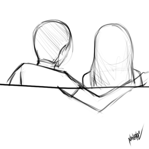

00 Días
00 Horas
00 Minutos
00 Segundos
¡Toca mi corazón, por favor!
You
En este momento, mientras el tiempo avanza y el reloj marca el inicio de un nuevo año, quiero ser lo primero que te acompañe en estos segundos tan especiales. Primero que nada, quiero desearte un feliz Año Nuevo y un año lleno de sueños cumplidos, de metas alcanzadas y de sonrisas que iluminen tu vida cada día. Deseo, de todo corazón, que la felicidad te encuentre siempre y que nunca te falte paz ni amor
Quiero agradecerte por haber aparecido en mi vida. No sé si fue el destino, una casualidad o un milagro silencioso, pero desde que llegaste todo cambió para mí. Tal vez nuestra historia comenzó de una forma rara y graciosa, pero cada momento que compartí contigo fue auténtico, especial y profundamente increíble.
En este corto tiempo te has convertido en alguien muy importante para mí, alguien que ocupa un lugar que no sabía que existía en mi corazón. Y aunque no sé qué nos deparará el futuro, sí sé algo con certeza: mi corazón siempre estará a tu lado, sin importar la distancia, el tiempo o las circunstancias.
Solo puedo darle gracias a tus padres por haber traído al mundo a una niña tan hermosa, no solo por fuera, sino también por dentro. Y le agradezco a la vida por darme la oportunidad de conocerte, de escucharte, de sentirte y de aprender a quererte como lo hago ahora.
Eres grandiosa tal como eres, y ojalá nunca cambies. Tu amabilidad, tu paciencia infinita, tu voz que calma, tu forma tan única de expresarte al mundo, tu lado tímido y tus emociones locas… todo eso me conquistó poco a poco y me hizo ver lo maravillosa que eres.
No sé si merezco tanto, pero aun así voy a luchar por cuidarte y por tenerlo todo contigo, porque no puedo imaginar dejarte ir. Aunque algún día me odies o no quieras verme, estará bien, pero yo no me rendiré, porque lo que siento por ti es real y sincero.
Aunque nuestro tiempo juntos haya sido corto, valoro cada instante a tu lado: cada segundo, cada mensaje, cada audio, cada palabra y cada silencio compartido. Todo lo guardo en mi corazón como un tesoro.
Hice todo esto porque quería mostrarte cuánto te amo, aunque sea un poco cursi. Valió cada segundo, cada madrugada y cada desvelo. Por ti haría eso y mucho más, porque cuando se ama de verdad, nada pesa y todo vale la pena.
